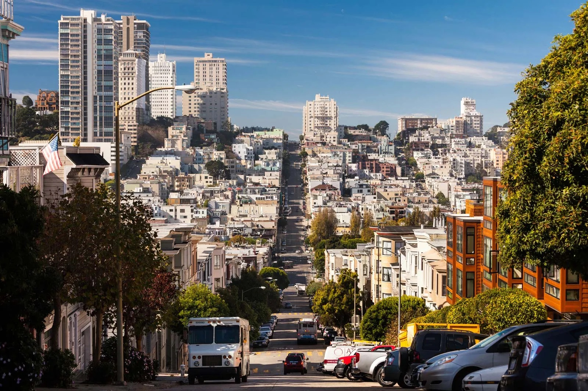
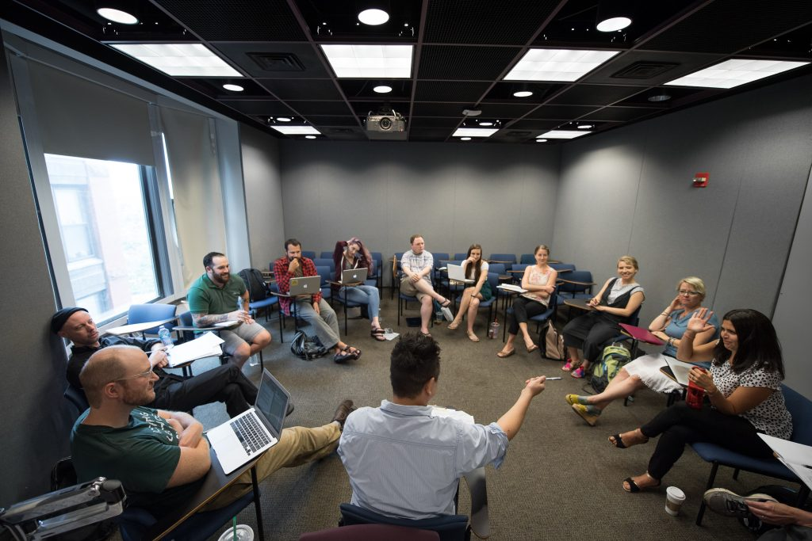
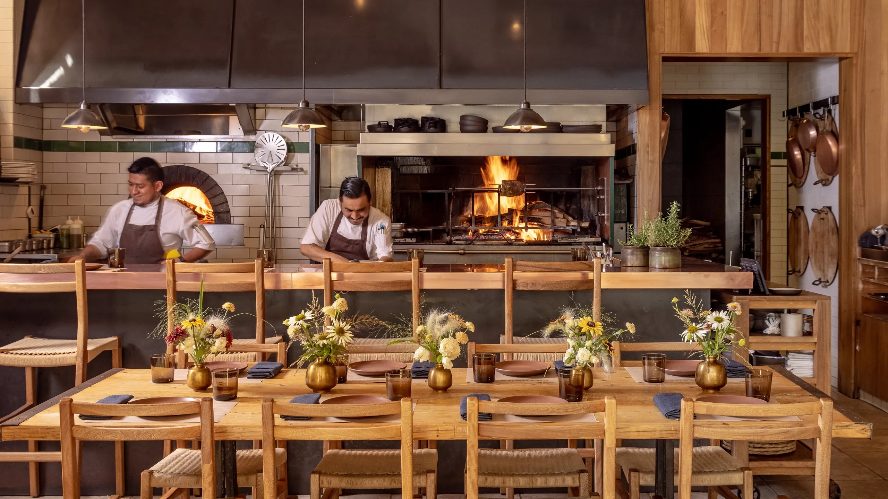
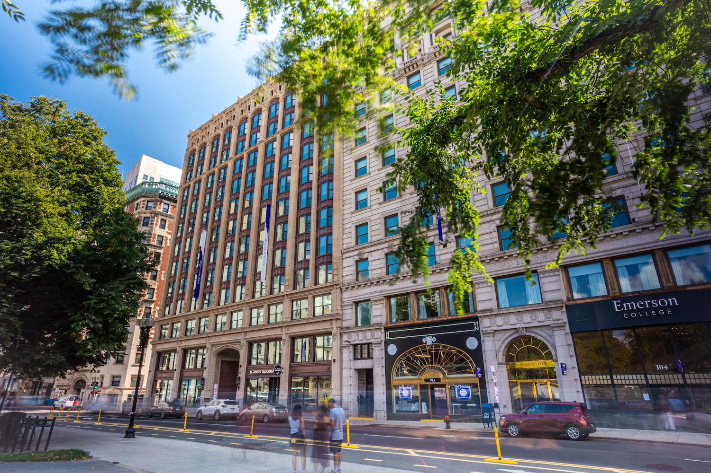
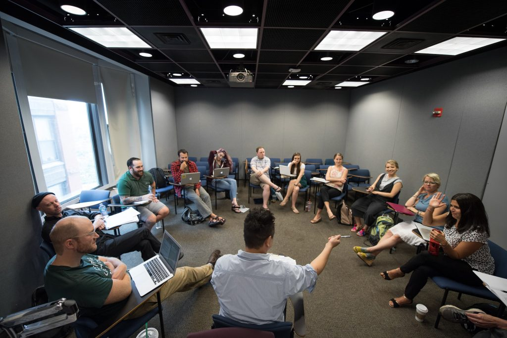
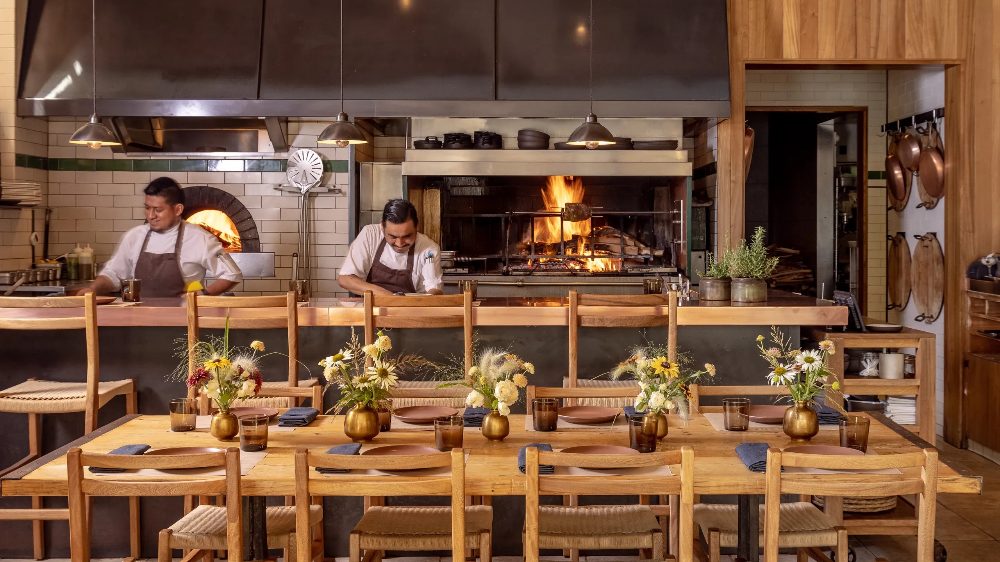
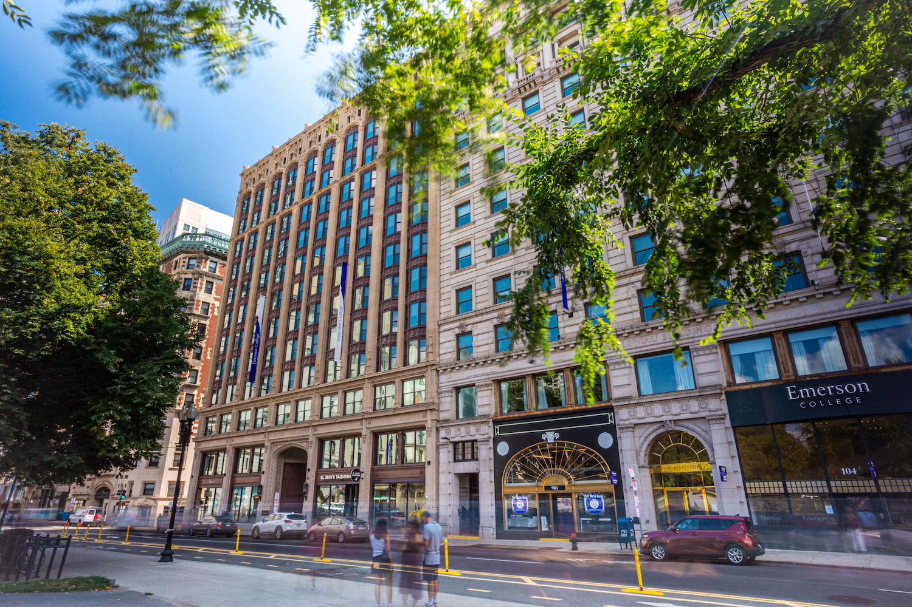

Blake Case
Blake Case is a third-year Creative Writing Major at the University of California, Riverside. Her passion and her dedication to the written word is a testament to the quality of her craft. Born and raised in San Francisco, Blake’s early obsession with reading and writing was celebrated and nurtured by educators and writers alike. This foundation has fueled a sincere appreciation for the art of narrative.
In the few quarters Blake has attended UC Riverside, she has quickly distinguished herself as an emerging voice in UCR’s renowned undergraduate Creative Writing department. Under the mentorship of esteemed faculty members, Blake has honed her skills in various genres, including poetry, creative nonfiction and fiction, demonstrating a versatility that sets her apart in this competitive field.
Blake’s work is characterized by its vivid imagery, emotional depth, and innovative narrative structures. His stories often delve into themes of identity, the natural world, and the intricacies and complexities of family systems and dynamics.
Blake’s commitment to her craft extends far beyond the university setting. She has participated in several writing retreats and workshops, including Emerson College’s Writer’s Workshop in Boston, seeking to broaden her horizons and engage with a diverse range of passionate young writers. These experiences have enriched her writing practice and provided him with valuable perspectives that continue to influence her work.
Looking ahead, Blake envisions a future where her writing not only entertains, but inspires and provokes thought. She is particularly interested in exploring intersections between literature and social issues, aiming to create narratives that resonate with readers and instigate meaningful conversations. Her long-term goal is to publish a book of poetry that reflects her unique voice.
Blake Case is not only a student with a bright future ahead of her, but she is a testament to the dynamic and vibrant nature of the creative writing discipline. Her journey at UC Riverside has been punctuated by an unequivocal pursuit of excellence, a genuine passion for storytelling, and a commitment to making an impact through her writing. As she continues to develop her craft and engage with the literary world and readers alike, Blake remains dedicated to exploring the endless possibilities that literature offers and to sharing her vision.
In addition to her academic achievements, Blake has extensive and thorough experience working in customer service. She began working at 16 at a Peet’s Coffee & Tea in her hometown and has gone on to provide exceptional customer service at restaurants and coffee bars. The experiences below highlights the range of vocational experience Blake has participated and excelled at. The focus that she has brought to the customer service fields reflects the dedication she exercises in her academic and creative pursuits.
Through her academic endeavors and vocational pursuits, Blake Case embodies the spirit of innovation and dedication that defines the next generation of writers. Her work promises to leave a lasting impression on the literary landscape, and her ongoing contributions to the field are a testament to her unwavering commitment to the art of storytelling.
Experience
Hostess
• Greeted and seated guests in a high-volume setting.
• Answered phone calls and scheduled reservations ahead of time to accommodate guests.
• Trained in OpenTable software to assign seating and schedule reservations efficiently.
Server
• Communicated with servers and managers to welcome, seat, and accommodate high-profile guests in a fast-paced environment.
• Addressed requests and concerns and resolved all issues to the guests’ satisfaction.
• Trained in SevenRooms software to assign seating and schedule reservations efficiently.
Barista
• Managed the register, engaged with regulars, and welcomed new customers.
• Worked closely with Stumptown coffee and their equipment.
• Made drinks, stayed organized and clean behind the bar, and created quality and authentic beverages.
• Made acai bowls, avocado toast, and fresh juices from our menu and took requests for personalized recipes using all organic ingredients.
Education
UC Riverside
Portfolio





 
